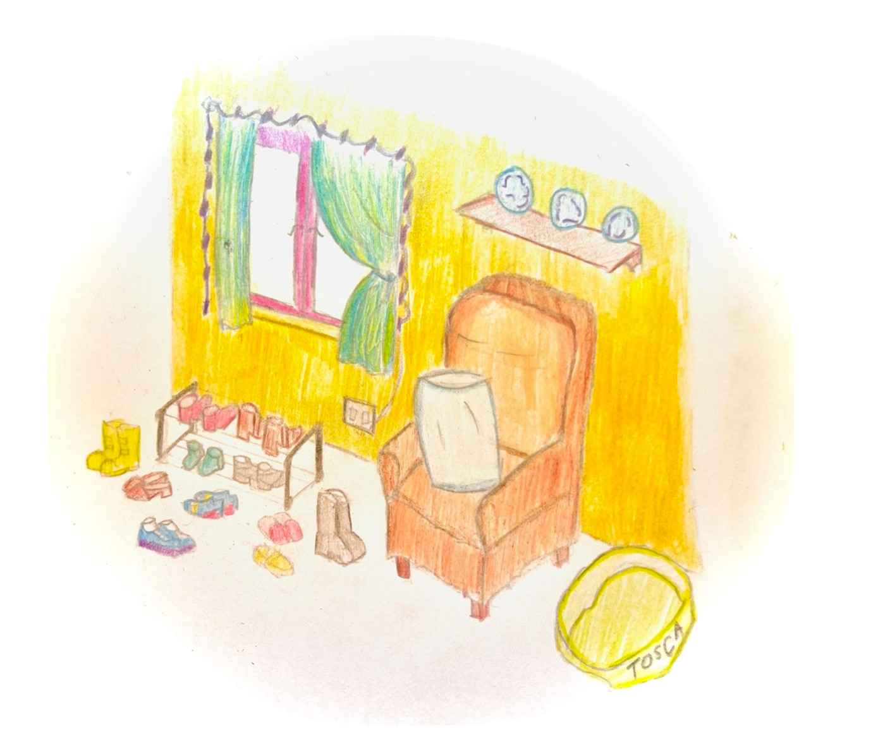
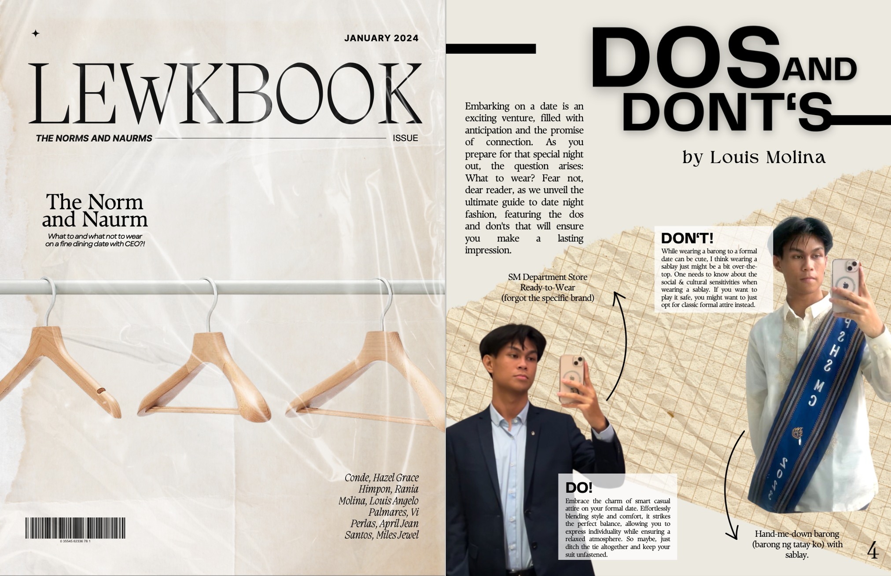

stuff i wrote about:
making a moodboard

One of the most memorable and enjoyable activities in Arts 1 was creating an emotion mood board. The task is for us to pick and choose different types of media that represent and reflect a chosen emotion. In my case, I picked ‘longing’. Being in an entirely new environment—that is, UP—after such a long time in what has become my comfort zone, it was hard not to long for the past. As I searched for pieces of media that resonated with what I was feeling, it felt as if I was also able to express what I feel through the pieces that I collate—through specific works of visual art and music, and even through memes, I was able to perceive better what specific emotions I was feeling.
I feel like the diversity of media adds another layer to its emotional effect upon humans. A photograph freezes a moment in time, capturing raw authenticity. Music, with its ability to evoke moods, becomes a soundtrack to our lives. Whether it's the ethereal brush of a watercolor or the haunting notes of a piano, each medium contributes a unique hue to the palette of our emotions.
With this, I was able to better appreciate the fact that the importance of art lies in its power to articulate the ineffable, offering a sanctuary for emotional expression. In a world often tumultuous and fast-paced, art becomes a refuge—a haven where we can navigate the complexities of our feelings.
practicing aesthetic scanning

Today’s age is marked by the rise of the commodification of art and the popularity of short-form content. Nowadays, there is just so much to see; in our public places and in social media, we encounter so much media that there is not enough time for us to process what we perceive. Thus, we tend to overlook the nuances, the subtleties, and the subtext. I realized as I engaged in activities for aesthetic scanning that it is also an act of mindfulness.
In and of itself, it is also the art of taking the time to observe the world around one’s self, not in a hurried or mechanical way, but with a genuine curiosity for the aesthetics that often go unnoticed. It's about appreciating the delicate interplay of light and shadow on the leaves, the way colors harmonize in a street mural, or the silent poetry written in the wrinkles of an elderly face. In this case, aesthetic scanning is a deliberate rebellion—a rebellion against the tendency to overlook the aesthetic treasures that surround us.
It also helped me a lot in art creation. In one of our activities, we were instructed to create an artwork based on our aesthetic scan of another artwork. I felt like I didn't really have the skill and ability in creating art out of nothing. During my elementary days, I pretty much only focused on copying or mimicking other art works or nature. However, with aesthetic scanning, a person’s perceptiveness is heightened and I felt as if I were empowered in creating something new out of mere inspiration.
creating the lewkbewk magazine

The lookbook was one of the most fun activities in class. I was able to experience the process of art production with my groupmates. Being exposed to other perspectives and opinions about something reminded me about the subjectivity of the mind and refreshed my thinking about many things.
With this I realized the value of the process of art especially when it is shared with other people. From this activity, I was able to appreciate the fact that what is important in art is not only its end, but also its means. This shows that art is not merely a product; it is a testament to the human spirit's capacity for expression and connection. By sharing the process, we are able to give way to collective introspection that encourages a shared exploration of the human experience. In this reciprocal exchange, the true essence of art reveals itself—the ability to unite, inspire, and remind us of our shared humanity.